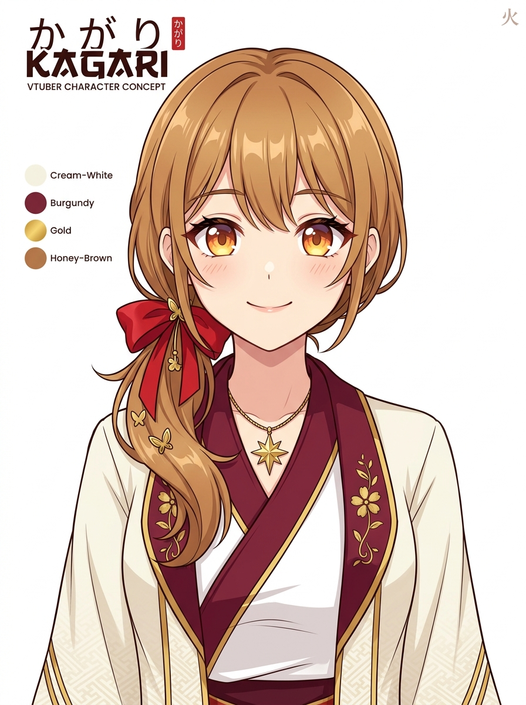
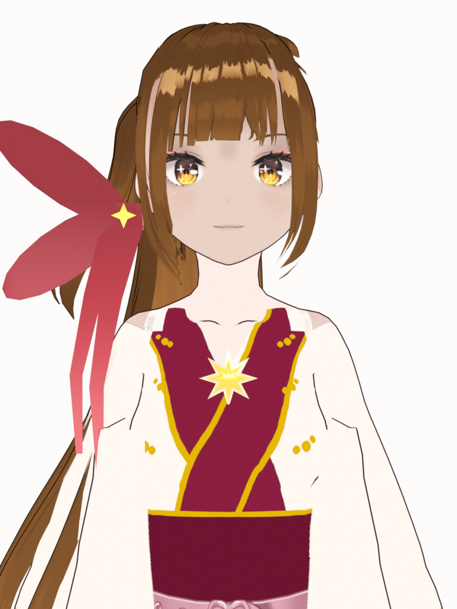
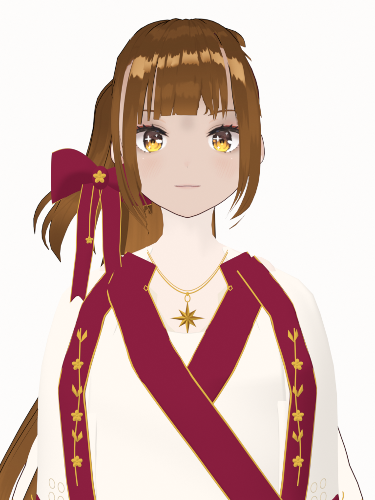
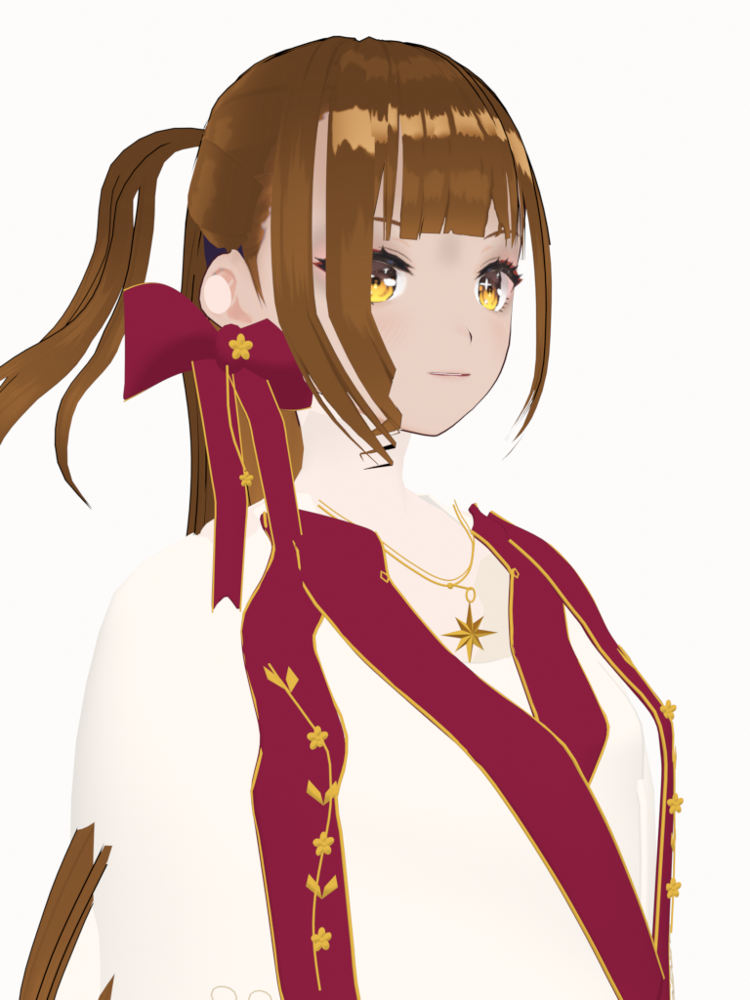
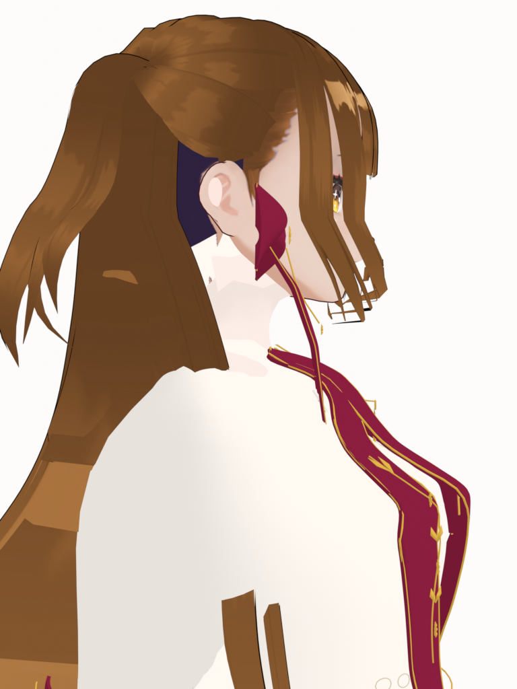
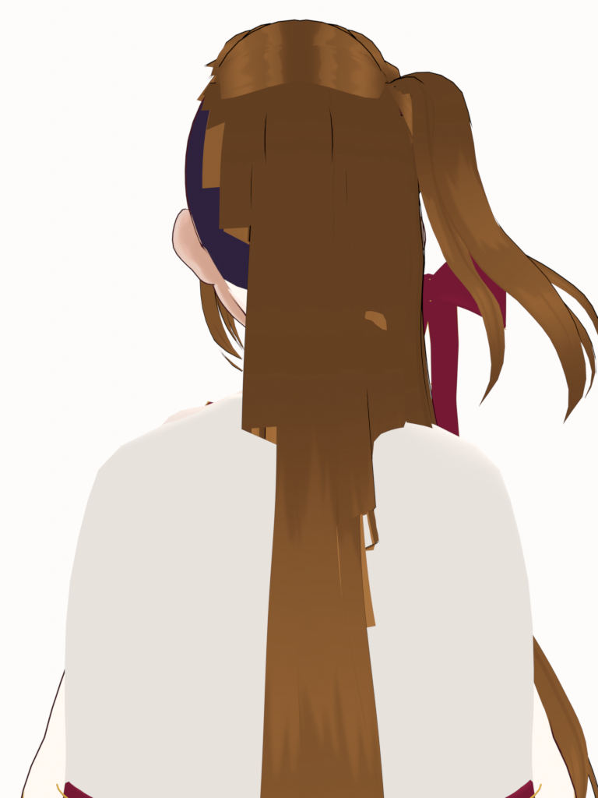
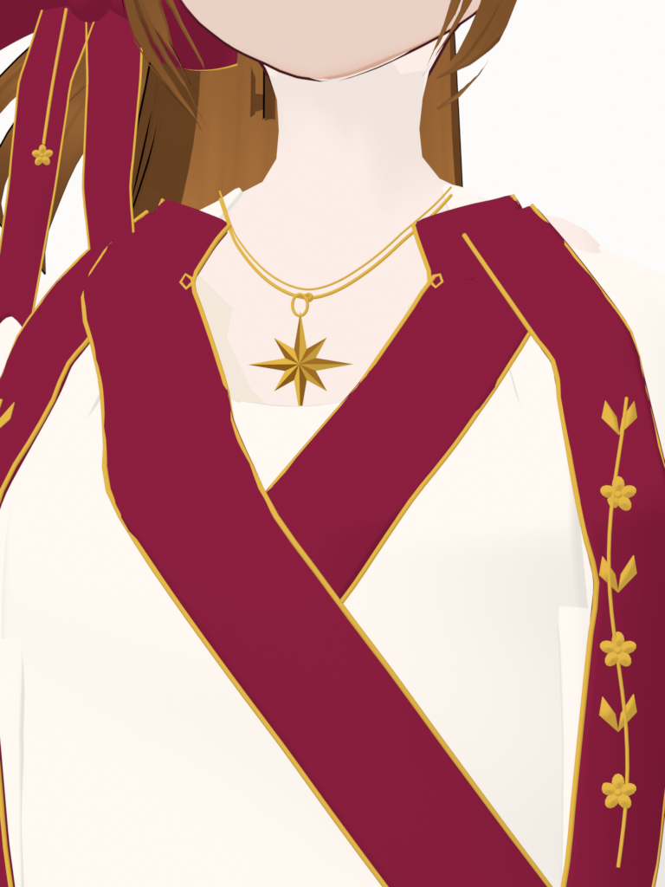

Cổ áo chồng lớp có độ dày, viền vàng mảnh, nhánh hoa có cánh và lá, nơ burgundy có mặt cong, mặt sao tám cánh và dây chuyền có tiết diện tròn. Ảnh trước và sau dùng cùng camera và ánh sáng Blender.







Bản thử để duyệt hình dáng. Phần tay áo và nếp rủ chưa hoàn thiện; biến dạng áo khi chuyển động và xuất VRM chưa được kiểm thử. Tóc và khuôn mặt giữ nguyên từ model nguồn.